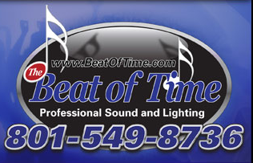

|  |
The Beat of Time
Professional Sound and Lighting
|
About Us
The Beat of Time has been entertaining the Western United States since 1985 with Amazing Sound, Video and Lighting Shows. We specialize in keeping up to date on the latest Sound, Lighting, Music, and Video Technologies with a very knowledgable staff in every department. The Beat of Time's world class disc jockeys use this state of the art equipment and years of experience to provide the type of music you want at the volume level you desire.
So whether your planning a wedding reception, school dance or other special event, you want everything to be perfect. We have every type of music from Pop, Rock, and Country to Hip Hop, Oldies and more.
BOOK YOUR EVENT NOW
801-549-8736